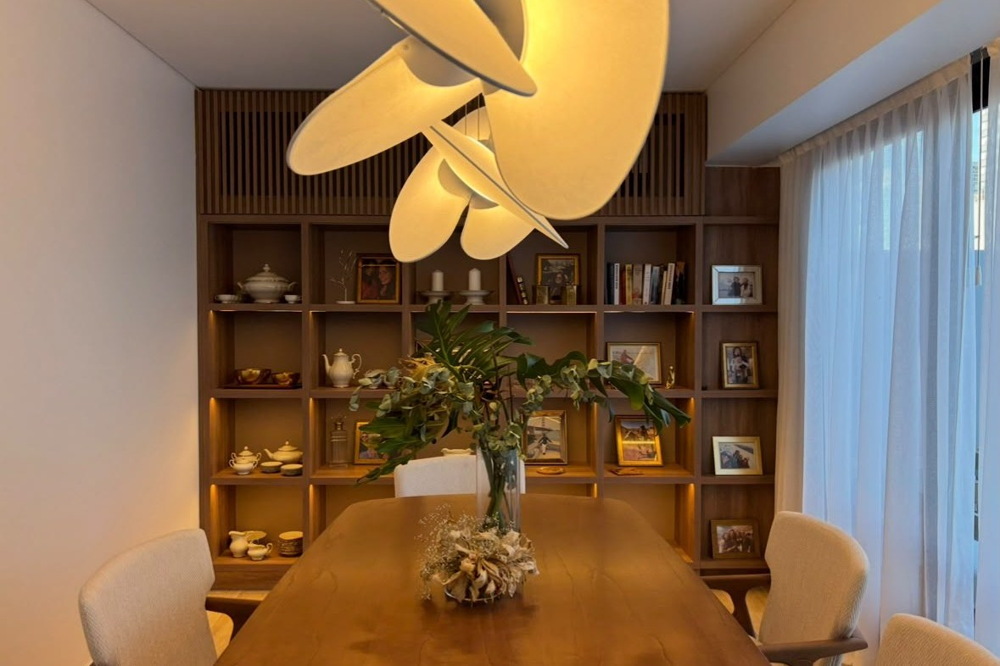

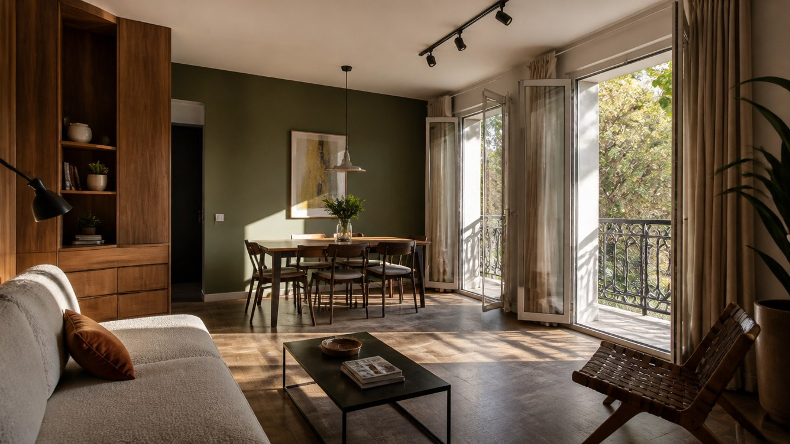
Departamentos porteños que vuelven a empezar.
Ver obrasSomos un estudio chico que hace una cosa: reformar departamentos, PH y casas en la Ciudad de Buenos Aires. Trabajamos sobre lo que ya está construido, con la cocina de los años setenta, la cañería vieja y el reglamento del consorcio incluidos en el problema.
Nos ocupamos del recorrido completo: relevamiento, proyecto, planos, trámites ante el Gobierno de la Ciudad y el consorcio, y dirección de obra con nuestros gremios de confianza. Un solo interlocutor de principio a fin, y un presupuesto que se puede seguir semana a semana.

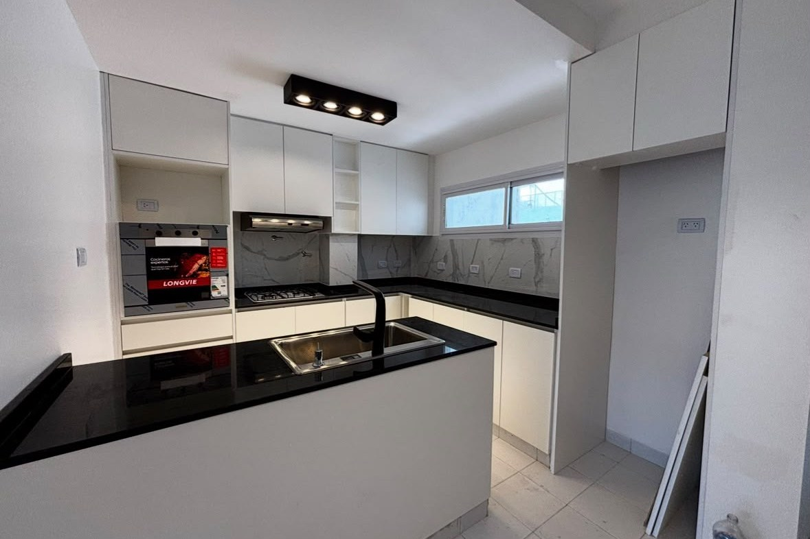
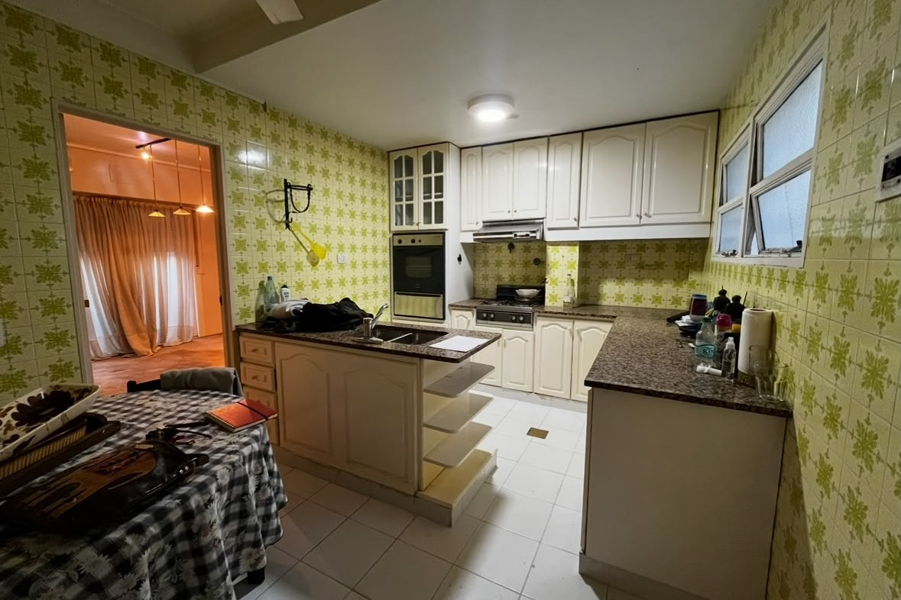
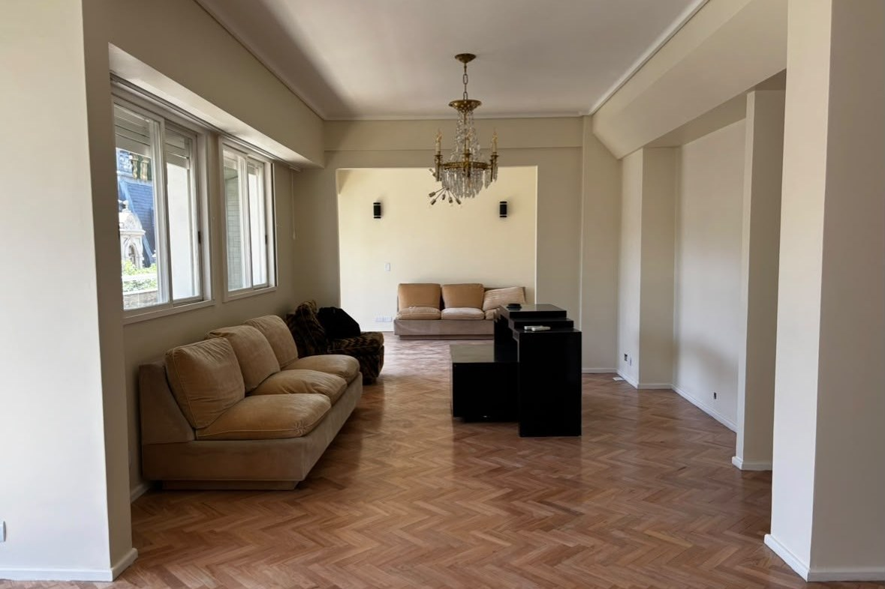
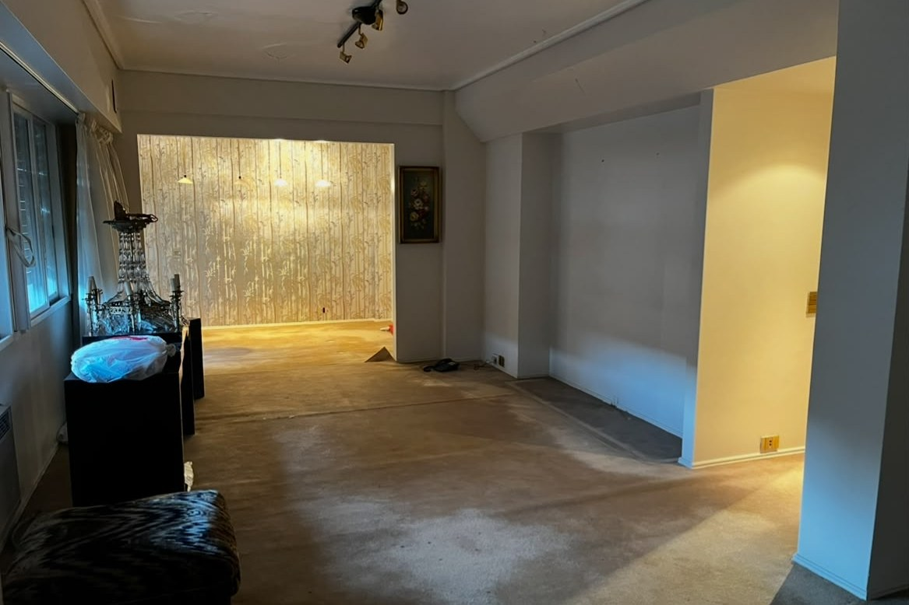
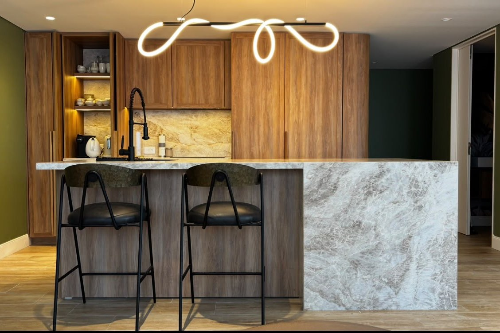
Reformas integrales, cocinas y baños, PH y casas, y dirección de obra con permisos. Todo con un mismo equipo, para que no tengas que coordinar cinco proveedores que se echan la culpa entre ellos.
Consultar por un servicio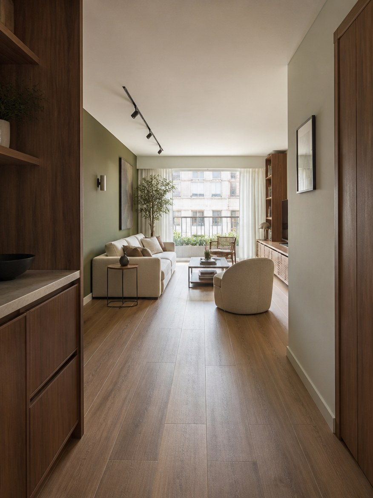
Redistribuir ambientes, tirar abajo lo que sobra y renovar instalaciones, pisos y aberturas. Departamentos de los años cincuenta a los ochenta que vuelven a funcionar como se vive hoy.
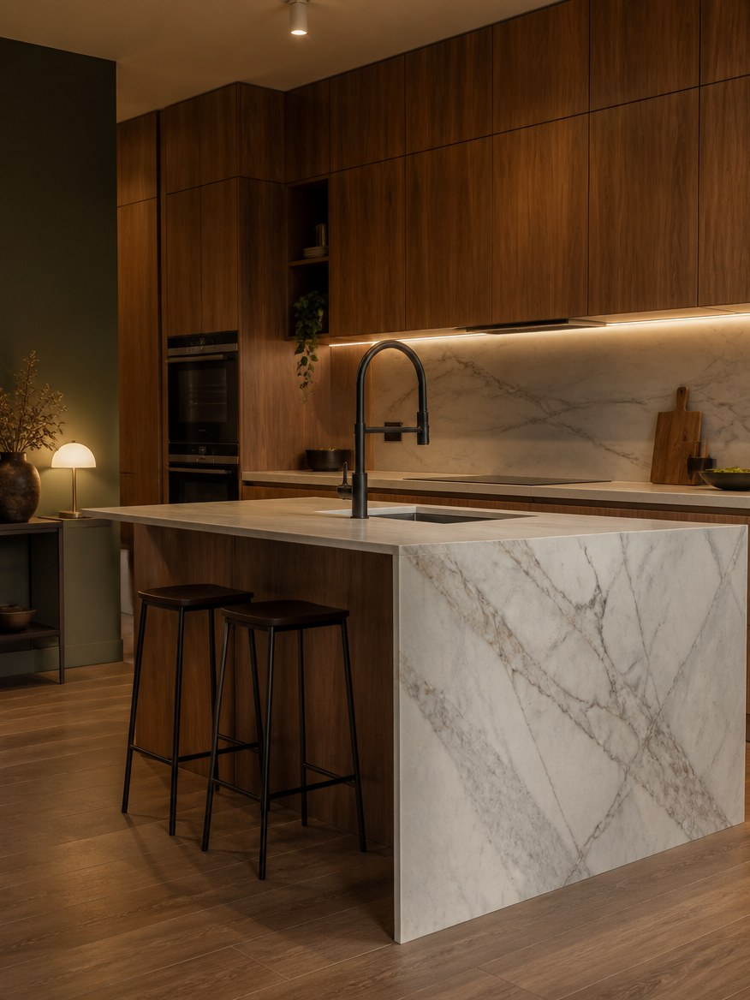
Los dos ambientes que más cambian el día a día y donde más se nota una buena resolución técnica: agua, gas, ventilación y muebles a medida.
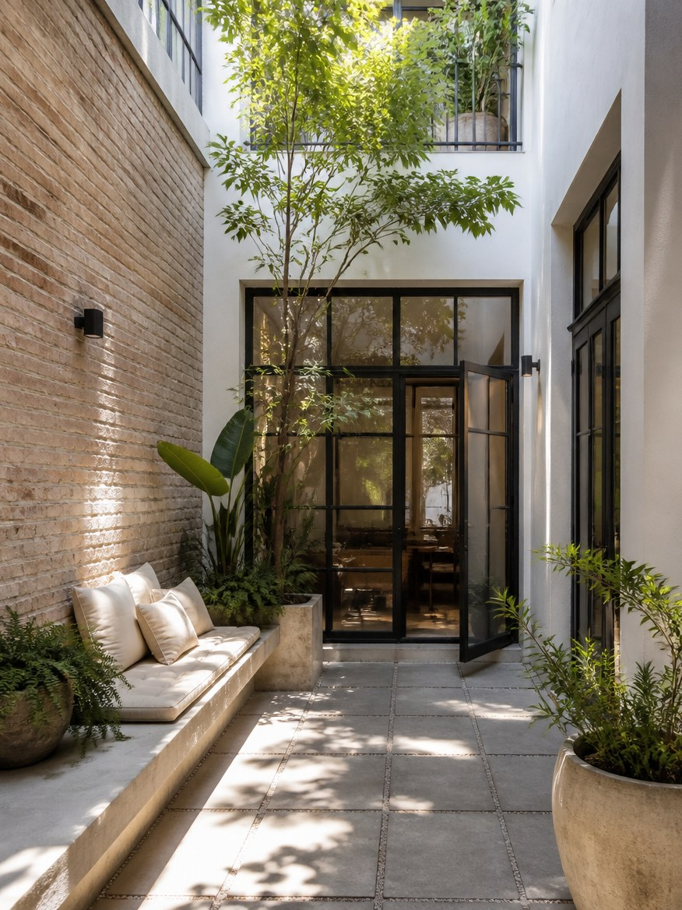
Patios, terrazas y ampliaciones en PH de Buenos Aires: sumar metros y luz natural respetando lo que el edificio ya tiene de bueno.
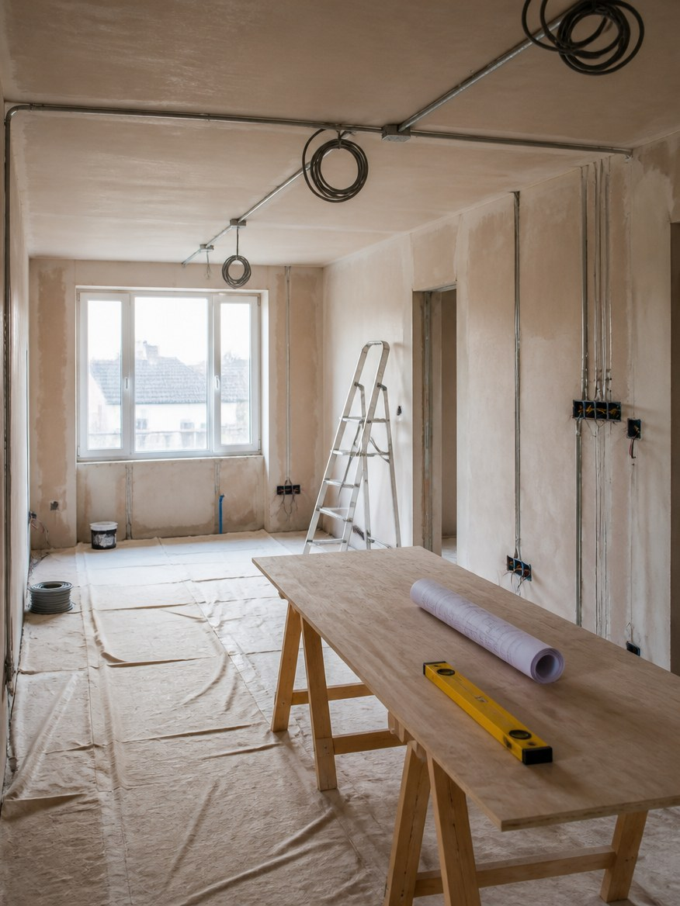
Trámites ante el Gobierno de la Ciudad y el consorcio, coordinación de gremios, certificados de avance y control del presupuesto hasta la entrega.
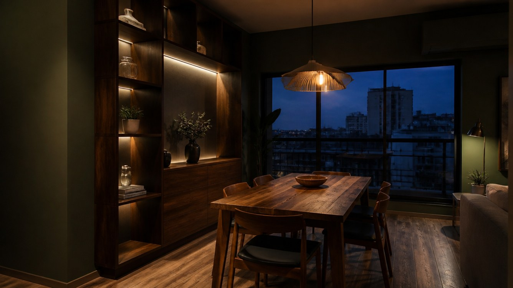
![[Nombre de la arquitecta]](fotos/retrato.jpg)
[Bio] Arquitecta con [X] años dedicados a reformar viviendas en la Ciudad de Buenos Aires. Está en la obra, conoce a los gremios por nombre y dibuja pensando en cómo se va a construir cada detalle.
Trabaja sobre todo en [barrios: Palermo, Belgrano, Núñez, Recoleta, Caballito], donde ya conoce los tiempos de los trámites y las mañas de los edificios de cada época.
[Confirmar estos dos números antes de publicar]
Conocé cómo trabajamosCada casa tiene una segunda vida.
“[Testimonio 1] Pegar acá la reseña real de un cliente, tal cual la escribió.”
“[Testimonio 2] Pegar acá la reseña real de un cliente, tal cual la escribió.”
“[Testimonio 3] Pegar acá la reseña real de un cliente, tal cual la escribió.”
“[Testimonio 4] Pegar acá la reseña real de un cliente, tal cual la escribió.”
“[Testimonio 5] Pegar acá la reseña real de un cliente, tal cual la escribió.”
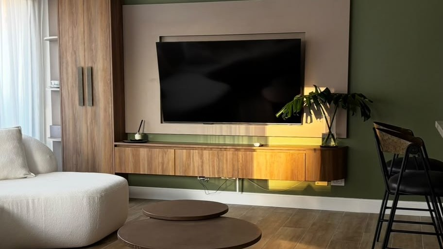
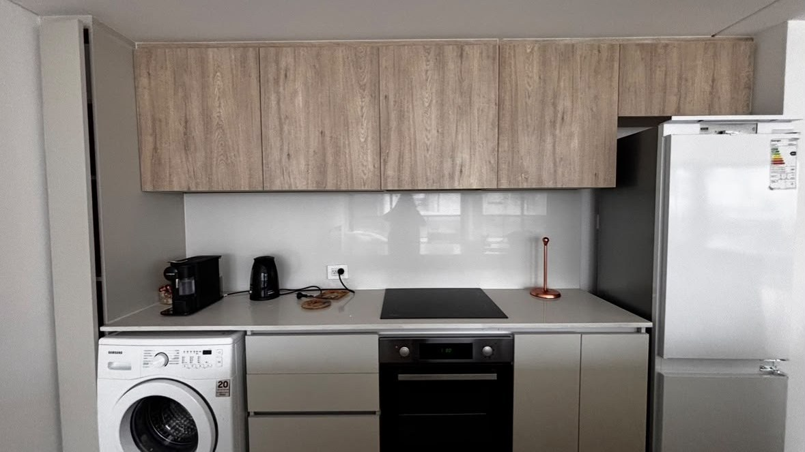
Contanos qué departamento querés reformar, qué te gustaría cambiar y con qué presupuesto contás. Coordinamos una visita, lo miramos en persona y te decimos con franqueza qué se puede hacer y qué no.
Primera visita sin cargo en la Ciudad de Buenos Aires.